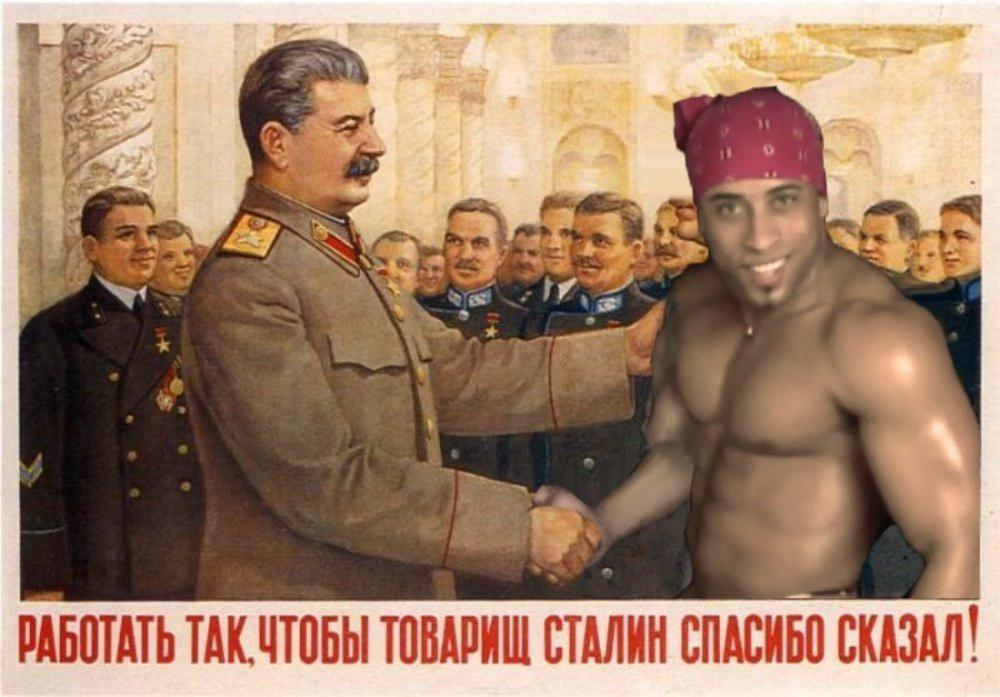

 Рикардо Милос - бразильский стиптизер и человек-мем. Стал широко известен благодаря видео, где исполняет «соблазнительный» танец в трусах с американским флагом и в красной бандане. Мускулистый мужчина с обворожительной улыбкой быстро завоевал популярность в интернете и стал основой для массы однотипных шуток. На видео с его танцем накладывают бодрую музыку, что вкупе с «эротическими» движениями создает комический эффект.